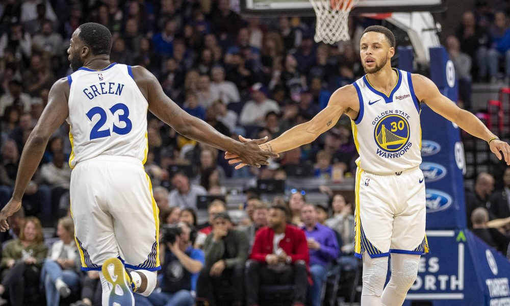

The Warriors have achieved 57 wins so far this season. They have been red hot since March. They also have been relatively healthy, although Steph Curry suffered a mild sprain on Tuesday night against the New Orleans Pelicans.
The warriors would end up losing to the Toronto Raptors in Game 6 of the NBA Finals. Klay Thompson and Kevin Durant both suffered major injuries in the NBA Finals.
Your Warriors Source - Fitz